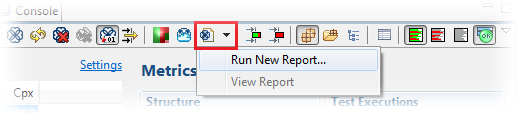
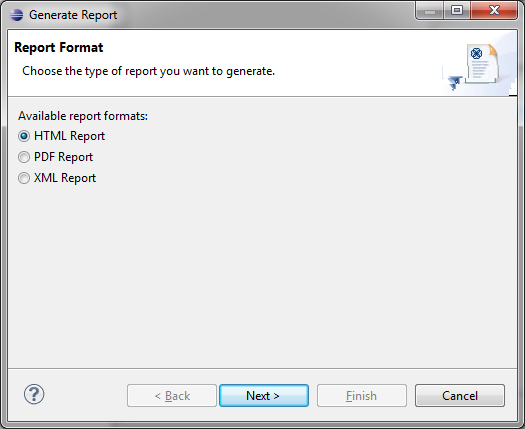
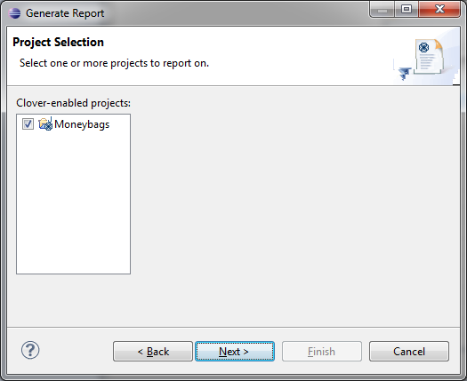
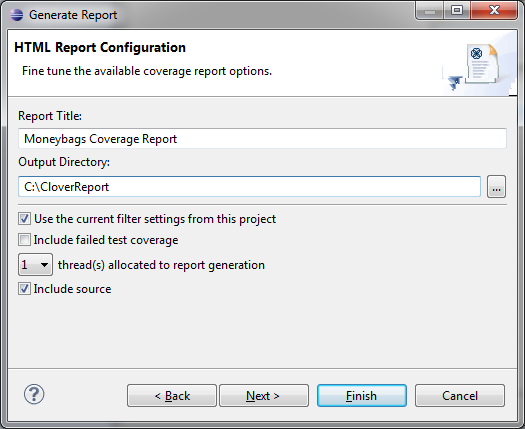
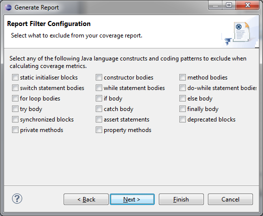
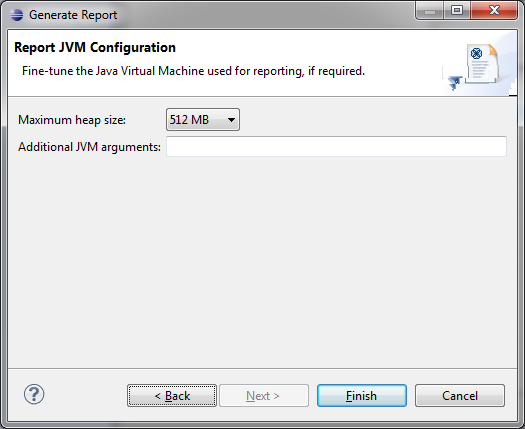
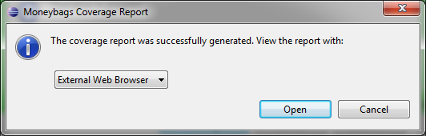
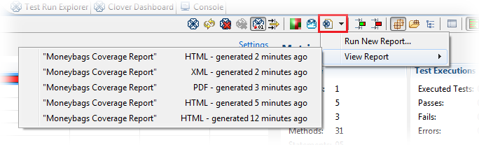

Introduction
The Clover-for-Eclipse plugin allows you to generate HTML, PDF or XML reports from one or more Clover-enabled projects in the current workspace.
Generating a Report
To create a report, select a project or source file then click the left-hand side of the Report Button in Eclipse. The 'Generate Report: Report Format' dialog opens.
 It doesn't matter whether you select a project
or an element of a project — the reports operate at the project level. Currently, Clover doesn't
support reporting on the sub-sets of a project.
It doesn't matter whether you select a project
or an element of a project — the reports operate at the project level. Currently, Clover doesn't
support reporting on the sub-sets of a project.

Select an Output Format
For your report, you can select an output format of HTML, PDF or XML.
To select the desired output format, click the corresponding radio button in the 'Generate Report: Report Format' dialog and click 'Next'. The 'Generate Report: Project Selection' dialog opens.

Select the Source Project
A list of available projects will be displayed. To choose one, click the tick box shown next to the desired project and click 'Next'. A dialog box with specific settings for the chosen report type opens.
 More than one project can be selected (this
would be used for instance if the user has multiple related projects or has application code in one
project, with test code in another).
More than one project can be selected (this
would be used for instance if the user has multiple related projects or has application code in one
project, with test code in another).

Configure General Settings for the Report
Your report can make use of the following settings:
| Setting | Default | Description |
|---|---|---|
| Report Title | <project name> Coverage Report | Report title. |
| Output directory | <project dir>\report\html | Directory where report will be written to. In case when report already exists in this location, appropriate warning will be displayed. |
| Use current filter settings from this project | True | If the user un-checks this they will be given the opportunity to set a custom context. |
| Include failed test coverage | True | Tests from failed tests are included by default but can be excluded if they wish to discount this as worthy of being reported. |
| Threads allocated (only for HTML reports) | 1 (range: 1-4) | Using more threads may product the report faster but will use more memory. 1 is recommended for large projects. |
| Include source (only for HTML reports) | True | Whether to include source code in the HTML reports. Not including source will mean users can't see per-line coverage information but report generation will run faster. |
| Include line info (only for XML reports) | False | Whether line by line coverage information is added to the report. |

Configuring a Report Filter
Report Filter Configuration is only shown if you choose not to accept default filter settings. This lets you select any of the predefined pre-defined filters or any of the custom method or statement filters you have previously configured.

Configuring Your Report JVM
On this page you can set maximum heap size (default: 512 MB) and additional JVM arguments.

Finalize the Report
Clicking 'Finish' will start the report generation process. Log output will appear in the Eclipse console area.
Opening the Generated Report
When report generation is complete, a dialog box will prompt you to open one of the following options:
- HTML report
HTML reports will be viewed either via the External Web Browser / Eclipse Web Browser (on supported platforms). - XML report
XML files will be viewed in either the External XML Editor / Eclipse XML Editor / Eclipse Text Editor - PDF report
PDF files will be viewed in the External PDF Viewer.

After a report is generated, an entry is added to the drop-down on the right-hand side of the report button in the Clover views which allow users to quickly re-open the report.

Sample PDF Report

Next chapter: 7. Test Optimization for Eclipse.